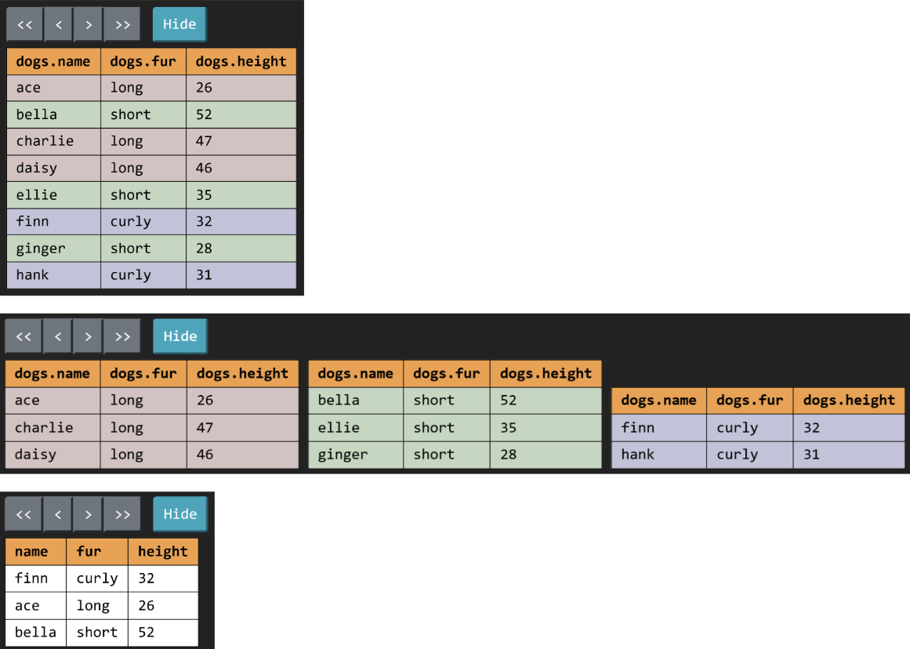

Lab 11 Solutions
Solution Files
Attendance
If you are in a regular 61A lab, your TA will come around and check you in. You need to submit the lab problems in addition to attending to get credit for lab. If you are in the mega lab, you only need to submit the lab problems to get credit.
If you miss lab for a good reason (such as sickness or a scheduling conflict) or you don't get checked in for some reason, just fill out this form within two weeks to receive attendance credit.
Required Questions
SQL
A SELECT statement describes an output table based on input rows. To write one:
- Describe the input rows using
FROMandWHEREclauses. - Group those rows and determine which groups should appear as output rows using
GROUP BYandHAVINGclauses. - Format and order the output rows and columns using
SELECTandORDER BYclauses.
SELECT (Step 3) FROM (Step 1) WHERE (Step 1) GROUP BY (Step 2) HAVING (Step 2) ORDER BY (Step 3);
Step 1 may involve joining tables (using commas) to form input rows that consist of two or more rows from existing tables.
The WHERE, GROUP BY, HAVING, and ORDER BY clauses are optional.
Consult the drop-down for a refresher on SQL. It's okay to skip directly to the questions and refer back here should you get stuck.
SQL Basics
Example Table
Here's a table called big_game used in the examples below, which records the
scores for the Big Game each year. This table has three columns: berkeley,
stanford, and year.

CREATE TABLE big_game (
berkeley INTEGER, stanford INTEGER, year INTEGER);
INSERT INTO big_game (berkeley, stanford, year) VALUES
(30, 7, 2002),
(28, 16, 2003),
(17, 38, 2014);You can view it in sqlite like this:
sqlite> .mode column
sqlite> SELECT * FROM big_game;
berkeley stanford year
-------- -------- ----
30 7 2002
28 16 2003
17 38 2014If the .mode column command doesn't work in your version of sqlite, that's ok. Just ignore it.
Selecting From Tables
Typically, we will create a new table from existing tables using a SELECT statement:
SELECT [columns] FROM [tables] WHERE [condition] ORDER BY [columns] LIMIT [limit];Let's break down this statement:
SELECT [columns]tells SQL that we want to include the given columns in our output table;[columns]is a comma-separated list of column names, and*can be used to select all columnsFROM [table]tells SQL that the columns we want to select are from the given tableWHERE [condition]filters the output table by only including rows whose values satisfy the given[condition], a boolean expressionORDER BY [columns]orders the rows in the output table by the given comma-separated list of columns; by default, values are sorted in ascending order (ASC), but you can use DESC to sort in descending orderLIMIT [limit]limits the number of rows in the output table by the integer[limit]
Here are some examples:
Select all of Berkeley's scores from the big_game table, but only include
scores from years past 2002:
sqlite> SELECT berkeley FROM big_game WHERE year > 2002;
28
17Select the scores for both schools in years that Berkeley won:
sqlite> SELECT berkeley, stanford FROM big_game WHERE berkeley > stanford;
30|7
28|16Select the years that Stanford scored more than 15 points:
sqlite> SELECT year FROM big_game WHERE stanford > 15;
2003
2014SQL operators
Expressions in the SELECT, WHERE, and ORDER BY clauses can contain
one or more of the following operators:
- comparison operators:
=,>,<,<=,>=,<>or!=("not equal") - boolean operators:
AND,OR - arithmetic operators:
+,-,*,/ - concatenation operator:
||
Output the ratio of Berkeley's score to Stanford's score each year:
sqlite> select berkeley * 1.0 / stanford from big_game;
0.447368421052632
1.75
4.28571428571429Output the sum of scores in years where both teams scored over 10 points:
sqlite> select berkeley + stanford from big_game where berkeley > 10 and stanford > 10;
55
44Output a table with a single column and single row containing the value "hello world":
sqlite> SELECT "hello" || " " || "world";
hello worldJoins
To select data from multiple tables, we can use joins. There are many types
of joins, but the only one we'll worry about is the inner join. To perform
an inner join on two on more tables, simply list them all out in the FROM
clause of a SELECT statement:
SELECT [columns] FROM [table1], [table2], ... WHERE [condition] ORDER BY [columns] LIMIT [limit];We can select from multiple different tables or from the same table multiple times.
Let's say we have the following table that contains the names of head football coaches at Cal since 2002:
CREATE TABLE coaches (
name TEXT,
start INTEGER,
end INTEGER
);
INSERT INTO coaches (name, start, end)
VALUES
('Jeff Tedford', 2002, 2012),
('Sonny Dykes', 2013, 2016),
('Justin Wilcox', 2017, 2025);When we join two or more tables, the default output is a cartesian product. For
example, if we joined big_game with coaches, we'd get the following:
sqlite> SELECT * FROM big_game JOIN coaches;
berkeley stanford year name start end
-------- -------- ---- ------------- ----- ----
30 7 2002 Jeff Tedford 2002 2012
30 7 2002 Sonny Dykes 2013 2016
30 7 2002 Justin Wilcox 2017 2025
28 16 2003 Jeff Tedford 2002 2012
28 16 2003 Sonny Dykes 2013 2016
28 16 2003 Justin Wilcox 2017 2025
17 38 2014 Jeff Tedford 2002 2012
17 38 2014 Sonny Dykes 2013 2016
17 38 2014 Justin Wilcox 2017 2025If we want to match up each game with the coach that season, we'd have to
compare columns from the two tables in the WHERE clause:
sqlite> SELECT * FROM big_game JOIN coaches ON year >= start AND year <= end
...> ;
berkeley stanford year name start end
-------- -------- ---- ------------ ----- ----
30 7 2002 Jeff Tedford 2002 2012
28 16 2003 Jeff Tedford 2002 2012
17 38 2014 Sonny Dykes 2013 2016In the query above, none of the column names are ambiguous. For example, it
is clear that the start column comes from the coaches table because there
isn't a column in the big_game table with that name. However, if a column
name exists in more than one of the tables being joined, or if we join a table
with itself, we must disambiguate the column names using dot notation and aliases.
For examples, let's find out what the score difference is for each team between
a game in big_game and any previous games. Since each row in this table represents
one game, in order to compare two games we must join big_game with itself:
sqlite> SELECT b.Berkeley - a.Berkeley, b.Stanford - a.Stanford, a.Year, b.Year
...> FROM big_game AS a, big_game AS b WHERE a.Year < b.Year;
b.Berkeley - a.Berkeley b.Stanford - a.Stanford year year
----------------------- ----------------------- ---- ----
-2 9 2002 2003
-13 31 2002 2014
-11 22 2003 2014In the query above, we give the alias a to the first big_game table and the
alias b to the second big_game table. We can then reference columns from
each table using dot notation with the aliases, e.g. a.Berkeley,
a.Stanford, and a.Year to select from the first table.
SQL Aggregation
Here's another example table, this time about flights:
CREATE TABLE flights (
departure TEXT, arrival TEXT, price INTEGER);
INSERT INTO flights (departure, arrival, price) VALUES
('SFO', 'LAX', 97),
('SFO', 'AUH', 848),
('LAX', 'SLC', 115),
('SFO', 'PDX', 192),
('AUH', 'SEA', 932),
('SLC', 'PDX', 79),
('SFO', 'LAS', 40),
('SLC', 'LAX', 117),
('SEA', 'PDX', 32),
('SLC', 'SEA', 42),
('SFO', 'SLC', 97),
('LAS', 'SLC', 50),
('LAX', 'PDX', 89);Applying an aggregate function
such as MAX(column) combines the values from multiple rows into an output row.
By default, we combine the values of all rows in the table. For example, if we
wanted to count the number of rows in our flights table, we could use:
sqlite> SELECT COUNT(*) from FLIGHTS;
13What if we wanted to group together the values in similar rows and perform the
aggregation operations within those groups? We use a GROUP BY clause.
Here's another example. For each unique departure, collect all of the rows having
the same departure airport into a group. Then, select the price column and
apply the MIN aggregation to recover the price of the cheapest departure from
that group. The end result is a table of departure airports and the cheapest
departing flight.
sqlite> SELECT departure, MIN(price) FROM flights GROUP BY departure;
departure MIN(price)
--------- ----------
AUH 932
LAS 50
LAX 89
SEA 32
SFO 40
SLC 42Just like how we can filter out rows with WHERE, we can also filter out
groups with HAVING. Typically, a HAVING clause should use an aggregation
function. Suppose we want to see all airports with at least two departures:
sqlite> SELECT departure FROM flights GROUP BY departure HAVING COUNT(*) >= 2;
departure
---------
LAX
SFO
SLCNote that the COUNT(*) aggregate just counts the number of rows in each group.
Say we want to count the number of distinct airports instead. Then, we could
use the following query:
sqlite> SELECT COUNT(DISTINCT departure) AS destinations FROM flights;
destinations
------------
6This enumerates all the different departure airports available in our flights
table (in this case: SFO, LAX, AUH, SLC, SEA, and LAS).
Usage
First, check that a file named sqlite_shell.py exists alongside the assignment files.
If you don't see it, or if you encounter problems with it, scroll down to the Troubleshooting
section to see how to download an official precompiled SQLite binary before proceeding.
You can start an interactive SQLite session in your Terminal or Git Bash with the following command:
python3 sqlite_shell.pyWhile the interpreter is running, you can type .help to see some of the
commands you can run.
To exit out of the SQLite interpreter, type .exit or .quit or press
Ctrl-C. Remember that if you see ...> after pressing enter, you probably
forgot a ;.
You can also run all the statements in a .sql file by doing the following:
(Here we're using the lab11.sql file as an example.)
Runs your code and then exits SQLite immediately afterwards.
python3 sqlite_shell.py < lab11.sqlRuns your code and then opens an interactive SQLite session, which is similar to running Python code with the interactive
-iflag.python3 sqlite_shell.py --init lab11.sql
Visualizing SQL
The CS61A SQL Web Interpreter is a great tool for visualizing and debugging SQL statements!
To get started, visit code.cs61a.org and hit Start SQL interpreter on the launch screen.
Most tables used in assignments are already available for use, so let's try to execute a SELECT statement:

In addition to displaying a visual representation of the output table, the "Step-by-step" button lets us step through the SQL execution and visualize every transformation that takes place. For our example, clicking on the next arrow will produce the following visuals, demonstrating exactly how SQL is grouping our rows to form the final output!

IMDb
The IMDb 1000 dataset contains the 1000 highest rated popular movies (top 0.2% of votes) from the Internet Movie Database.
The tables in this dataset are quite large, so it's often useful to use LIMIT to
look at just a couple of rows in one of the tables. To look at a few example
rows from the titles table, which contains information about each movie:
% sqlite3
sqlite> .read imdb1000.sql
sqlite> .tables
crew names principals ratings titlesThe command beginning with .read reads in the SQL commands in imdb1000.sql, which
create new tables with the movie dataset. The .tables command lists out all of the
tables.
Here are the tables and columns you'll need for this lab. The .mode column
command improves the formatting, but it doesn't work in the sqlite_shell.py
and it's optional.
sqlite> .mode column
sqlite> SELECT tconst, title, year, runtime FROM titles LIMIT 3;
tconst title year runtime
--------- ------------------------------- ---- -------
tt0012349 The Kid 1921 68
tt0013442 Nosferatu: A Symphony of Horror 1922 94
tt0015864 The Gold Rush 1925 95
sqlite> SELECT tconst, ordering, nconst, character FROM principals LIMIT 3;
tconst ordering nconst character
--------- -------- --------- ---------
tt0012349 1 nm0000122 A Tramp
tt0012349 2 nm0701012 The Woman
tt0012349 3 nm0001067 The Child
sqlite> SELECT nconst, name, birth, death FROM names LIMIT 3;
nconst name birth death
--------- -------------- ----- -----
nm0000002 Lauren Bacall 1924 2014
nm0000004 John Belushi 1949 1982
nm0000005 Ingmar Bergman 1918 2007tconst is a unique identifier for each movie (the t is for title), and nconst is a unique
identifier for each person. These identifiers are useful for joining rows from different tables,
e.g., to determine the rating for a particular movie, we would find the movie's nconst in the
titles table, and then lookup that nconst in the ratings table.
Q1: Newest Movies
Create a table newest that contains the 10 newest movies in the dataset, and that has two columns:
title: The name of a movieyear: The year the movie was made
If you'd like, see if you can guess which movies will be in the results.
SELECT ____, ____
FROM ____
ORDER BY ____
LIMIT ____;- Use
FROMto specify which table to read the data from. - Use
ORDER BYto sort by which movies are the newest. - Use
LIMITto select only the 10 newest movies. - Use
SELECTto put the movie title and year in the output.
CREATE table newest AS
SELECT title, year
FROM titles
ORDER BY year DESC
LIMIT 10;python3 ok -q newestQ2: Movies with Dogs
Create a dog_movies table that includes one row for each movie character that includes the word "dog",
and that has two columns:
title(text): The name of a moviecharacter(text): The name of the dog character
A single movie may appear multiple times if it has multiple dog characters.
SELECT _____, _____
FROM _____ JOIN _____ ON _____
WHERE ____ LIKE "%dog%";- Use
FROM,JOIN, andONto combine the information in thetitlesandprincipalstables. - Use
WHEREto select only characters that include "dog". - Use
SELECTto put the movie title and character in the output.
CREATE table dog_movies AS
SELECT title, character
FROM titles JOIN principals
ON titles.tconst = principals.tconst
WHERE character LIKE "%dog%";python3 ok -q dog_moviesQ3: Leads of Leads
Create a leads table that has two columns:
name(text): The name of an actorlead_roles(integer): The number of movies that the actor has been the lead in
You can find lead roles by looking in the principals table for rows with ordering set to 1.
Only select actors who have been the lead in more than 10 movies.
SELECT ____, ____ AS lead_roles
FROM ____ JOIN ____ ON ____
WHERE ____
GROUP BY names.nconst
HAVING count(*) > 10;- Use
FROMandONto combine the information in theprincipalsandnamestables. - Use
WHEREto select only lead roles. - Use
GROUP BYto create a single row for each person. - Use
HAVINGto output only people who had more than 10 lead roles. - Use
SELECTto put the person's name and the count of their roles in the output.
CREATE table leads AS
SELECT name, count(*)
FROM names JOIN principals
ON names.nconst=principals.nconst
WHERE ordering=1
GROUP BY names.nconst
HAVING count(*) > 10;python3 ok -q leadsQ4: Long Movies
Create a long_movies table that contains the number of movies in each decade that are
over 3 hours long. long_movies has two columns:
decade(strings): The decade, e.g.,1920scount(numbers): The number of movies in that decade that are over 3 hours (180 minutes) long
For the IMDB 1000 dataset, the result will be:
+--------+-------+
| decade | count |
+--------+-------+
| 1930s | 1 |
| 1950s | 2 |
| 1960s | 2 |
| 1970s | 3 |
| 1980s | 2 |
| 1990s | 7 |
| 2000s | 4 |
| 2010s | 3 |
| 2020s | 4 |
+--------+-------+sqlite> SELECT (192 * 10) || "s";
1920sSELECT ____ AS decade, ____ AS count
FROM ____
WHERE ____
GROUP BY ____;- Use
FROMandWHEREto choose only the movies with runtime greater than 180 minutes. - Use
GROUP BYto group together all of the movies for one decade. - Use
SELECTto create a string like1920sfor each decade, and to select the count of movies for each decade.
CREATE table long_movies AS
SELECT ((year / 10) * 10) || "s" AS decade, COUNT(*) AS count
FROM titles
WHERE runtime>180
GROUP BY year / 10;Use Ok to test your code:
python3 ok -q long_moviesCheck Your Score Locally
You can locally check your score on each question of this assignment by running
python3 ok --scoreThis does NOT submit the assignment! When you are satisfied with your score, submit the assignment to Pensieve to receive credit for it.
Submit Assignment
Submit this assignment by uploading any files you've edited to the appropriate Pensieve assignment. Lab 00 has detailed instructions.
Correctly completing all questions is worth one point. If you are in the regular lab, you will need your attendance from your TA to receive that one point. Please ensure your TA has taken your attendance before leaving.